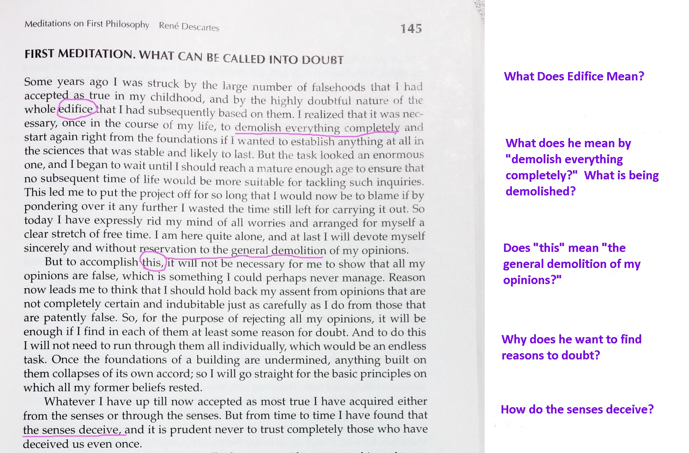

Sample Annotation

The student who
wrote these
annotations can look
for answers in later
parts of the text.
Or, s/he can look
them up or ask
his/her instructor.
Descartes, Rene.
“Meditations on First Philosophy.”
Fifty Readings in Philosophy
.
4
th
Edition.
Ed.
Donald Abel.
New York:
McGraw-Hill, 2012.
144-154.
Print.